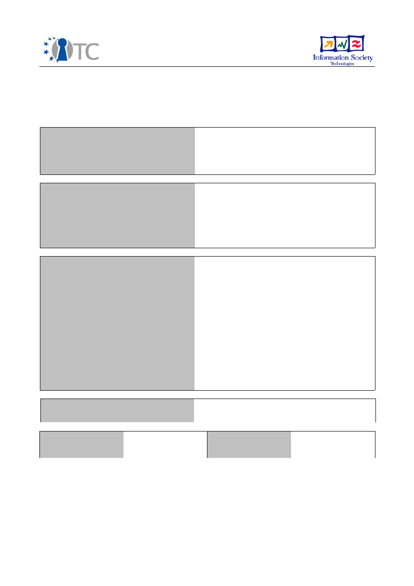
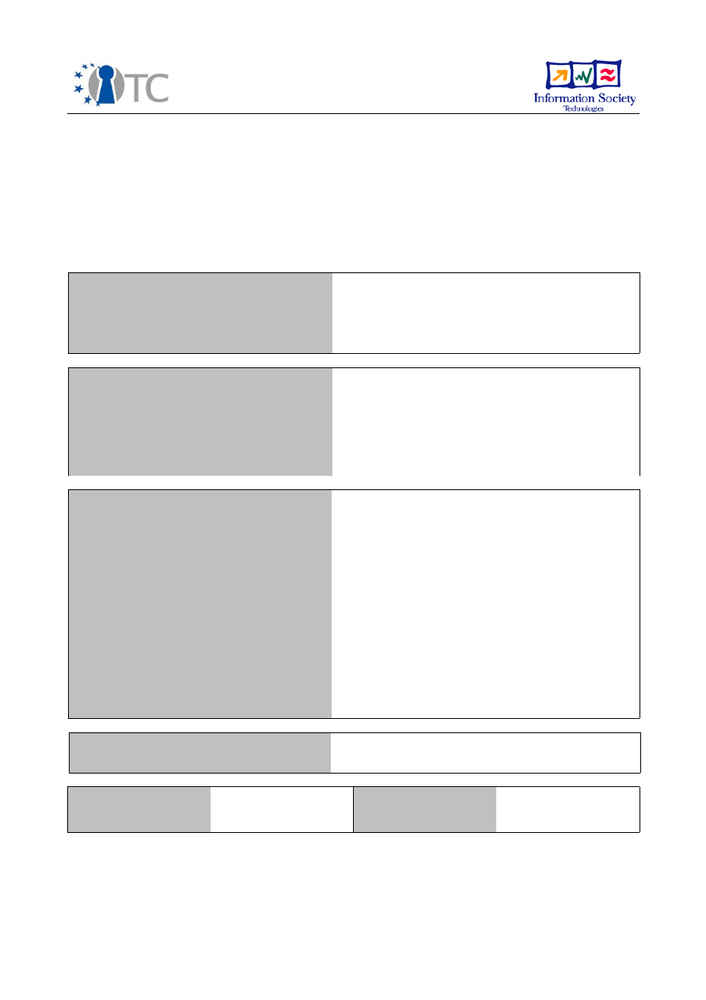
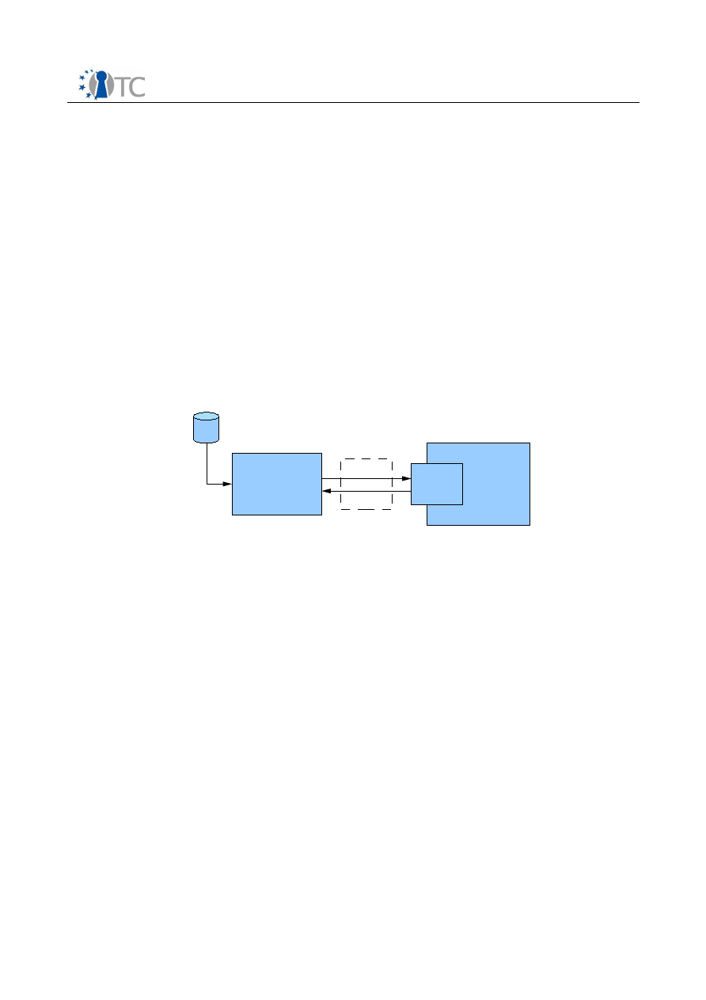
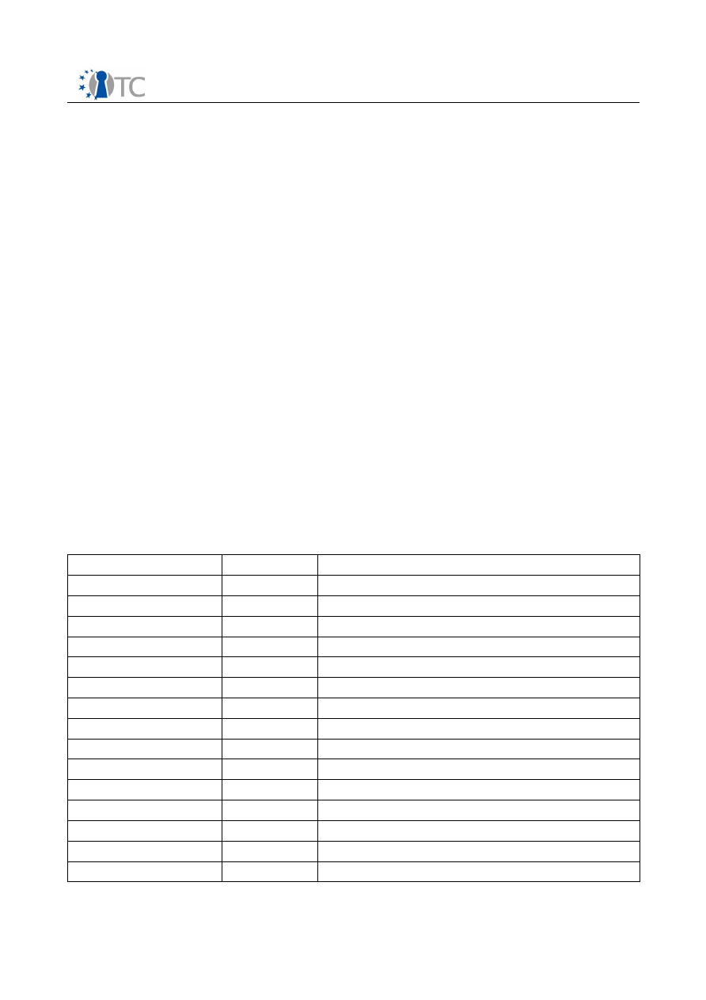

D6.4 Collection of all SWP deliverables (with
nature=P,O,D) produced during month 13-24
Project number
IST-027635
Project acronym
Open_TC
Project title
Open Trusted Computing
Deliverable type
Deliverable
Deliverable reference number
IST-027635/D06.4/FINAL | 1.00
Deliverable title
D6.4 Collection of all SWP deliverables (with
nature=P,O,D) produced during month 13-24
WP contributing to the deliverable
WP6
Due date
Oct 2007
Actual submission date
Nov 2007
Responsible Organisation
LDV,Lehrstuhl für Datenverarbeitung, TUM
Authors
Chun Hui Suen
Abstract
Keywords
OpenTC WP6
Dissemination level
Public
Revision
FINAL | 1.00
Instrument
IP
Start date of the
project
1
st
November 2005
Thematic Priority
IST
Duration
42 months

D06a.1 Preliminary DRM System Specification
FINAL | 1.00
This deliverable is a compilation of the following software deliverables:
●
D06a.2 Concept system prototype including basic DRM functionality (M 18)
●
D06b.4 First MEITC prototype with 2 compartments (M24)
●
D06d.2 EFS C/C++ API implementation (M22)
(No accompanying documentation)
●
D06e.5 Complete MFA System Prototype (M 24)
(refer to the section D06e.5 in deliverable D06.3 on description of the system
prototype)
The source code itself is attached on an accompanying CD.
The accompanying documentation for D06a.2 and D06b.4 is compiled in the following
sections of this document.
Note: The deliverable D06d.2 is deemed incomplete and will be revised in the next
phase of the project. Thus, it will not be publicly released with the rest of this
document.
Open_TC Deliverable D06.4
2/2

D6a.2 Concept system prototype including
basic DRM functionality
Project number
IST-027635
Project acronym
Open_TC
Project title
Open Trusted Computing
Deliverable type
Report (see p 84/85 Annex 1 - Nature)
Deliverable reference number
IST-027635/D6a.2/Final|1.1
Deliverable title
Concept system prototype including basic DRM
functionality
WP contributing to the deliverable
WP6a
Due date
M17
Actual submission date
Apr 2007
Responsible Organisation
LDV
Authors
LDV (Florian Schreiner, Chun Hui Suen)
Abstract
Keywords
Dissemination level
Internal
Revision
Final|1.1
Instrument
IP
Start date of the
project
1
st
November 2005
Thematic Priority
IST
Duration
42 months

Concept system prototype including basic DRM functionality
Final|1.1
Table of Contents
1 Introduction............................................................................................................................3
2 System description.................................................................................................................3
2.1 Overview.............................................................................................................................3
2.2 Key exchange......................................................................................................................3
2.3 DRM core ............................................................................................................................4
2.4 Key database .....................................................................................................................4
2.5 License interpretation ........................................................................................................4
2.6 Modified VLC player ...........................................................................................................5
3 Features implemented to date ...............................................................................................6
4 Usage Instructions..................................................................................................................6
4.1 Adding new content to the system......................................................................................6
4.1.1 Encrypting content.........................................................................................................6
4.1.2 Modifying entries in the key database............................................................................7
4.1.3 Putting entries into the license database.......................................................................7
4.2 Starting the DRM Core........................................................................................................7
4.3 Starting media player (VLC) client.......................................................................................8
5 Classes description in DRM Core.............................................................................................9
5.1.1 OtcTest...........................................................................................................................9
5.1.2 SimpleTCPPlayerStub.....................................................................................................9
5.1.3 CoreManager..................................................................................................................9
5.1.4 DbManagerImpl..............................................................................................................9
5.1.5 InterpreterInterface......................................................................................................10
5.1.6 MPEG21Interpreter.......................................................................................................10
5.1.7 Item..............................................................................................................................10
5.1.8 Key...............................................................................................................................10
5.1.9 License.........................................................................................................................11
5.1.1 0Rel..............................................................................................................................11
6 features to be implemented in the future ............................................................................12
Open_TC Deliverable 6a.2
2/12

Concept system prototype including basic DRM functionality
Final|1.1
1
Introduction
This document serves as a general introduction to the prototype DRM system, with instructions
on how to setup and use the system, as well as a technical overview of the components.
2
System description
2.1 Overview
The following sections describes the internal operations of the communication chain between
the VLC media player and the DRM core, and also the internal classes implemented to date in
the DRM core.
2.2 Key exchange
The prototype key exchange protocol is based on a simple TCP/IP connection. Figure 1 shows
an overview of the key exchange between the VLC player and DRM core. The VLC player,
parses the mp4 file. In the header of the mp4 file, if a "MVID" box is found within the "MOOV"
box, the 32-bit integer stored in the "MVID" box is the MovieID. The VLC player then opens a
local connection to the DRM core and sends this 32-bit integer. The DRM core, upon receiving
the 32-bit MovieID, performs the appropriate license interpretation. If there is a positive
authorization, the DRM core returns the 16 byte AES key from the key database.
This simple key exchange protocol will be used only for the prototype, and will be replaced by a
RPC-based protocol, with options for describing playback restrictions in the final
implementation.
Open_TC Deliverable 6a.2
3/12
Figure 1: Overview of key exchange
modified VLC
player
encrypted
content
DRM Core
Player
Stub
movieID
key
key exchange

Concept system prototype including basic DRM functionality
Final|1.1
2.3 DRM core
The DRM core is implemented in Java, with a similar class hierarchy as described in the initial
design specification. The main program entry point is the
OtcTest
class. It starts the
SimpleTCPPlayerStub
, which acts as a client player stub to the DRM core, and the
CoreManager
. The
CoreManager
implements the 2 main external interfaces of the DRM core,
ManagementInterface
and
PlayerInterface.
The SimpleTCPPlayerStub
acts as a TCP socket listener for the media player. Upon receiving
the MovieID from the VLC player, it calls the
getDecryptionKey
function in
CoreManager
. The
CoreManager
in turn calls the
DatabaseManager
and MPEG21Interpreter to perform license
interpretation. In this prototype implementation, license interpretation is performed by an
external script
translateMPEG21.py
, which is implemented in python.
2.4 Key database
The current implementation of the key database is based on plain text file storage. Licenses
and root grants are stored as xml files, and the content keys as a text file within the database
directory. This will be stored in a relational database in the final implementation.
2.5 License interpretation
License interpretation is performed by a python script, which is called by the java-based DRM
core. The following MPEG-21 terms are recognized:
Tags
Type
Meaning
license
general
a REL License
grant
general
grant a right
rootGrant
general
root grant
keyHolder
general
principal in which the right is granted to
issuer
general
issuer of license
digitalResource
general
contains corresponding MovieID of content
propertyUri
general
Required or provided property
prerequisiteRight
condition
Condition: require a right which can be fulfilled
validityInterval
condition
Condition: within the validity interval
notBefore
condition
Condition: not before specified date
notAfter
condition
Condition: not after specified date
exerciseLimit
condition
Condition: right not applied more than specified
count
condition
Condition: specifies count
possessProperty
right
Grants a property to respective keyHolder
play
right
Right to play (default right for playback)
Open_TC Deliverable 6a.2
4/12

Concept system prototype including basic DRM functionality
Final|1.1
2.6 Modified VLC player
The media player is modified from the open source Video Lan (VLC) version 0.8.6a stable
source. VLC player was chosen as the base player, because:
●
it is open-source,
●
has wide support of different video and audio codecs,
●
has support for MP4 based file format that is closely related to the MPEG-21 file format,
●
has a well developed module/plug-in system which aids in the development of
modifications to support OpenTC DRM system.
Modifications were applied to the
mp4.c
file in
modules/demux/mp4
. In addition to the normal
MP4 file parsing process, the additional steps were included:
●
During initialization, the parser searches for a”MVID” box. If found, a 4-byte MovieID is
read from the box content, and the content is assumed to be encrypted for the OpenTC
system:
○
It then opens a TCP/IP connection to the DRM core (this is currently set to
localhost
for testing), and sends the MovieID to the core. Upon receiving the content
decryption key, the AES decryption function is initialized with the decryption key,
and decryption mode is activated.
○
If decryption mode is activated, during the de-multiplexing of the main video
content in the “mdat” box, the AES decryption function is called to perform
decryption on-the-fly on the required block (in ECB mode). This allows for seeking to
different positions within the file without decrypting the entire file first.
■
Internally, the start and 16-byte block boundaries of the “mdat” is checked, so
that the blocks are decrypted with exactly the same block boundaries as the
encryption process.
Open_TC Deliverable 6a.2
5/12

Concept system prototype including basic DRM functionality
Final|1.1
3
Features implemented to date
The following features have been implemented to date:
●
content decryption on media player
●
encryption tool
●
core:
○
inter-connection between manager classes
○
license interpretation
4
Usage Instructions
The prototype DRM system consist of 2 main components: the DRM Core and a modified VLC-
based media player. The following sections will explain how to use each of the components,
and its related tools. The modified VLC player is able to playback any unencrypted content like
the normal VLC player. Playback of encrypted content is currently limited to content packaged
in MP4 format. An encryption tool (see section 4.1.1) is provided to encrypt the MP4 content
and embed a special MovieID, which will be the main reference ID between the player and DRM
core. Sections 2.2 and 2.3 explain how the corresponding key and license database should be
modified. Sections 2.4 and 2.5 show how the DRM core and modified VLC can be started.
Included together with this document are the files
DRMcore.zip
which contain the DRM core
and tools, and
vlc0.8.6a_OTC_Modified.tar.gz
which contains the modified VLC player.
4.1 Adding new content to the system
In order to add new media content to the system, steps 4.1.1 to 4.1.3 should be taken to first
encrypt the media, and update the database entries in the DRM core.
4.1.1 Encrypting content
A tool written in C is provided to encrypt MP4 based multimedia files using 128-bit AES
encryption. This is done by:
1. extracting the
DRMcore.zip
file into a directory
DRMcore
by the command:
unzip DRMcore.zip
2. goto the
DRMcore/opentc/tools/encrypter
directory
3. run the encrypter program using:
./encrypter inputfile.mp4 outputfile.mp4 MovieID AES_KEY
where
inputfile.mp4
is the path to the input file in mp4 format,
outputfile.mp4
is the output
file path,
MovieID
is an integer (which will be referenced in the license), and
AES_KEY
is a 128-
bit AES key (represented using exactly 16 ASCII characters).
Open_TC Deliverable 6a.2
6/12

Concept system prototype including basic DRM functionality
Final|1.1
Note: Encryption is independant of codec, but only codecs supported by VLC can be played
(most codecs supported in official VLC code is enabled in compilation option).
4.1.2 Modifying entries in the key database
To insert new entries into the content key database, the following steps should be taken to edit
the respective text files:
1. in the
DRMcore/opentc/database
directory
2. edit the
keyData.txt
file and add a new line of the form:
3. MovieID=AESKEY
where
MovieID
corresponds to the integer used in encryption, and
AESKEY
is 16 pairs of hex
numbers of the corresponding
AES_KEY
used in the encrypter program (without space between
pairs of hex numbers).
To remove entries, simply remove the respective lines in the
keyData.txt
file.
4.1.3 Putting entries into the license database
To insert a new license into the content key database for a particular content file, the following
steps should be taken:
1. in the
DRMcore/opentc/database
directory
2. create a text file named
<movidID>.xml
(replace <movidID> by the MovieID integer in
the encryption process)
3. write a MPEG-21 license in this xml license file (refer to existing example for the license
structure)
The list of supported tags is given in section 2.4.
Additionally, root grants can be created by making text license files named:
Rootxxx.xml
(where xxx is an integer in increasing order)
4.2 Starting the DRM Core
In order to start the DRM core, follow the instructions:
1. from the
DRMcore/opentc
directory.
2. start the server using the command:
3. java cp bin de.tum.ldv.opentc.OtcTest
Note
: Java 5.0 or above is necessary for the DRM core, and python version 2.4 with standard
libraries.
Open_TC Deliverable 6a.2
7/12

Concept system prototype including basic DRM functionality
Final|1.1
4.3 Starting media player (VLC) client
extract the
vlc0.8.6a_OTC_Modified.tar.gz
file.
The tar file contains pre-compiled binaries for a Ubuntu 6.10 system. If recompilation is
necessary, please follow the standard compilation procedure for VLC given in the file
INSTALL
.
The demux/mp4 module is necessary for the decryption and decoding of encrypted media for
OpenTC.
start the modified VLC client by running
./vlc
Choose quick open file from the menu and select the encrypted mp4 file to open.
Open_TC Deliverable 6a.2
8/12

Concept system prototype including basic DRM functionality
Final|1.1
5
Classes description in DRM Core
The following section describes the class, the interactions among the implemented classes
within the DRM core, and its public methods.
5.1.1 OtcTest
Class Description:
Main entry point for prototype DRM core
5.1.2 SimpleTCPPlayerStub
Class Description:
A stub class which runs as a listener thread, and waits for connection from
the media player. It acts as a player stub to the DRM core.
5.1.3 CoreManager
Class Description:
Main manager class of the DRM core which implements the
ManagementInterface
and
PlayerInterface
interface. It initializes all other manager
classes, and calls the appropriate manager upon request.
functions:
public
int
playerInit(String playerCapabilities)
playerStub registers with DRM core and receives playerID.
public
void
insertLicense(String licenseText, Rel relType, Item item)
insert license into database.
public
Key getDecryptionKey(
int
playerID, Item item, String operation)
get content decryption key
public
Key getAttestationKey(
int
playerID, Rel relType, String serverURL)
get attestation key
5.1.4 DbManagerImpl
Class Description:
Implementation of the
DatabaseManager
interface.
functions:
public
List<License> getLicense(Item item)
get license by item reference
public
void
setLicense(Item item, License license, ItemState state)
save license in database (not yet implemented)
Open_TC Deliverable 6a.2
9/12

Concept system prototype including basic DRM functionality
Final|1.1
public
void
deleteLicense(Item item)
delete license by item reference (not yet implemented)
public
ItemState getItemState(Item item)
retrieve item state (not yet implemented)
public
void
setState(Item item, ItemState state)
save item state into database (not yet implemented)
public
Key getDecryptionKey(Item item)
get content key for item
5.1.5 InterpreterInterface
Class
Description
:
interface class for license interpretation
functions:
String
interpretLicense(java.util.List<License> licenseGroup, Item item,
ItemState state, SystemState system, String operation)
interprets license by calling the specific interpreter based on REL type
5.1.6 MPEG21Interpreter
Class Description: License interpreter for MPEG21 license format
functions:
public
String interpretLicense(List<License> licenseGroup, Item item,
ItemState state, SystemState system, String operation)
interprets license (by calling python script)
5.1.7 Item
Class Description:
encapsulates a reference to content item
functions:
public
int
getID()
get item reference (MovieID)
5.1.8 Key
Class Description:
encapsulates the content key
Open_TC Deliverable 6a.2
10/12

Concept system prototype including basic DRM functionality
Final|1.1
functions:
public
byte
[] getKey()
get content key
public
int
getKType()
get key type
public
int
getLength()
get key length
5.1.9 License
Class Description:
encapsulates the license string
functions:
boolean
isRELType(String type)
check REL type
boolean
isRELType(Rel rel)
check REL type
public
String getText()
get license string
5.1.10 Rel
Class Description:
represents a particular REL type
functions:
public
String getName()
get name of REL type
Open_TC Deliverable 6a.2
11/12

Concept system prototype including basic DRM functionality
Final|1.1
6
features to be implemented in the future
The following features are yet to be implemented:
●
user-friendly response when content key not received
●
time-based restriction on content playback
●
packaging core and player into secured compartments
●
core:
○
license and key in sealed DB storage
○
Database based license interpretation
○
license translation
○
proper RPC protocol between core and player compartment
○
utility class
○
management functions
○
attestation
○
secure time
○
user credentials based on certificates
Open_TC Deliverable 6a.2
12/12
D6b.4 First MEITC prototype with 2
compartments
Project number
IST-027635
Project acronym
Open_TC
Project title
Open Trusted Computing
Deliverable type
Deliverable
Deliverable reference number
IST-027635/D06b.4/FINAL | 1.00
Deliverable title
D6b.4 First MEITC prototype with 2
compartments
WP contributing to the deliverable
WP6
Due date
Oct 2007
Actual submission date
Oct 2007
Responsible Organisation
TUBITAK
Authors
Görkem Çetin
Abstract
Installation instruction for MEITC prototype
Keywords
OpenTC WP6
Dissemination level
Public
Revision
FINAL | 1.00
Instrument
IP
Start date of the
project
1
st
November 2005
Thematic Priority
IST
Duration
42 months
D06a.1 Preliminary DRM System Specification
FINAL | 1.00
1 Installing and running the MEITC framework
This section describes how to build a Message Exchange Infrastructure for Trusted
Computing (MEITC). Currently, the TPM/TSS parts are left blank, so only a pure mailer
system will be built with the help of general purpose Linux servers.
MEITC consists of the following components:
•
A web server, which handles all the incoming requests. The requests are
forwarded to the mail server in order to read, reply or delete the users' mails.
•
An e-mail server, which is used to handle the incoming and outgoing mails. The
mail server runs postfix and dovecot to answer POP3/IMAP connections.
•
A MySQL server, which holds the users' mailboxes.
•
A CSP (certificate service provider), which is used to hold the user's certificates.
CSP is also responsible for updating and revoking the certificates in its
database.
Since MEITC will run under a hypervisor, all the components explained above need to
be installed on seperate virtual machines. These VMs need to be small in size, in order
to enable the specific binaries to be measured. Currently, the size of each of these
components are around 600 Mb, but currently work is underway to lower this number
to a reasonable point.
The figure below shows a diagram of the system. FIGURE: Diagram of the system.
Here, each of the servers take an IP mentioned below. These IP's need not be same in
your system, but for the sake of consistency, you are advised to keep the IP's.
1. Certificate Server:
192.168.1.100
2. Postfix Mail Server:
192.168.1.101
3. MySQL server:
192.168.1.102
4. Apache Web Server:
192.168.1.103
In this model, certificate service provider (CSP) will act as the dom0, which will serve
as the hypervisor system. The details on how to install a Xen server on the dom0 is
explained in section 3. First, the installation of dom0 is required, and then, the servers
mentioned above (2,3,4) will be installed.
Please proceed to the tutorial on how to install dom0 and then refer back to this
document.
2 Installing and running the Apache web server under
MEITC
Pardus Linux repositories contain Apache as the primary web server, together with
scripting languages like PHP. For the message exchange infrastructure on the web
server part, the following software should be up and running.
•
Apache web server: Version 2.0.3 or more
•
PHP with IMAP extensions: Version 4 or more.
Apache web server will be used for the incoming connections to the web server.
Apache will redirect the requests via PHP to the mail server, where a postfix system is
installed. According to the request, a mail can be fetched from the INBOX, forwarded
to another recipient, deleted or replied.
Open_TC Deliverable D06b.4
2/7

D06a.1 Preliminary DRM System Specification
FINAL | 1.00
In order to install the web server, install a domU component on dom0 and configure
the IP addresses, DNS servers and gateway. The Apache server will have the IP
192.168.1.103, so executing the following commands will set up a running Apache
system, which is connected to the internet.
•
Install a domU client on dom0
•
Boot the domU client.
•
Enter the system as root.
•
Run the nano editor, opening /etc/conf.d/local.start: nano /etc/conf.d/local.start
•
Enter the following lines to the end of the file. We assume that the gateway is
192.168.1.1 ifconfig eth0 192.168.1.103 netmask 255.255.255.0 route add
default gw 192.168.1.1
•
Save the file, and execute it by the following command: sh /etc/conf.d/local.start
•
Now, modify the DNS so that it will point to the correct DNS server. For
this, /etc/resolv.conf will be edited like the following: nameserver 192.168.1.1
Put your DNS server IP instead of "192.168.1.1"
•
The web server will now have the corresponding IP and the DNS as planned.
Now we will install the web server components. The following packages need to be
installed using the PISI package manager:
•
Apache web server
•
PHP scripting language
For this, enter the following two commands as root:
sudo pisi it apache mod_php
2.1 Installing and running the Postfix mail server under MEITC
Like Apache, Pardus Linux repositories contain necessary software for Postfix (e-mail
server) and Dovecot (IMAP and POP3 server). It's enough to install cyrus-sasl, dovecot
and postfix to have a fully functional e-mail server.
sudo pisi it postfix dovecot cyrussasl
3 HOWTO - Xen under Pardus
This document tells how to install Xen under Pardus to have more than 1 working
virtual machines, i.e hypervisors. Xen packages for Pardus can be obtained from the
package repository by using package manager.
Every virtual machine running under Xen is called a "domain". The underlying
manager, which controls these domains is called Domain 0 (dom0). Likewise, the
virtual machines running on top of dom0 are called unprivileged domain (domU).
Dom0, in fact, nothing but a special kind of kernel loaded by Xen hypervisor.
3.1 Installing the required packages
The following command should be issued in order to install dom0, domU and other
helper/manager applications.
Open_TC Deliverable D06b.4
3/7

D06a.1 Preliminary DRM System Specification
FINAL | 1.00
pisi it xen xentools kerneldom0 kerneldomU
This command will install the xen package, together with xen tools for management
and kernel for dom0 and domU respectively.
3.2 Booting with dom0
For the physical machine to booth with Xen hypervisor (dom0), we need to add a few
lines to the boot loader, grub.conf, found in /etc/grub.conf.
Note that you need to modify the lines (hd0,1) and root=/dev/hda2 lines according to
your system. (hd0,1) shows the second partition (here, noted as "1") in the first disk
(noted as "0").
title Xen [2.6.16.294dom0]
root (hd0,1)
kernel (hd0,1)/boot/xen.gz
module (hd0,1)/boot/kernel2.6.16.294dom0 root=/dev/hda2
module (hd0,1)/boot/initramfs2.6.16.294dom0
Now, after booting the system with this kernel, we can immediately start producing
virtual machines called domU's.
3.3 Creating a test domU
Before creating a domU, we need to install a pre-packaged Linux image. Run the the
following commands to install the image under Pardus.
•
Download the ttylinux-xen.bz2 file from
this URL
.
•
Unzip the file by
bunzip2 ttylinuxxen.bz2
•
Generate the following Xen configuration file under /etc/xen.
kernel = "/boot/kernel2.6.16.294domU"
memory = 64
name = "ttylinux"
disk = ["file:/home/username/ttylinux,sda1,w"]
root = "/dev/sda1 ro"
Note that the file URL next to "disk" parameter should be modified to reflect the
changes ttylinux file resides.
•
Start the Xen management service by issuing
service xentools start
commmand.
•
Start ttylinux with the following command (again, under root privileges). Note
that the default password for ttylinux is "root".
xm create /etc/xen/ttylinux c
Now, you have booted your first virtual machine. Now, using another console, you can
test your unprivileged domains, and manage them by using dom0 with the help of xm
command.
xm list
Name ID Mem(MiB) VCPUs State Time(s)
Domain0 0 1165 1 r 85.7
Open_TC Deliverable D06b.4
4/7

D06a.1 Preliminary DRM System Specification
FINAL | 1.00
ttylinux 4 64 1 b 0.2
As you have tried a prepackaged ttylinux specifically created for Xen, now it's time to
create a new virtual machine that we can seriously build or applications on. There are
different methods to boot an unprivileged domain via Xen, such as Logical Voluma
Manager (LVM), a real disk partition or a sparse file which is a filesystem itself
including a virtual machine.
xm shutdown
command can be used to power off a virtual machine safely, giving its
name as a parameter.
xm shutdown ttylinux
3.4 Creating a real domU
In order to generate a file that will hold our new virtual machine, we need to create a
file with 4 Gb in size. Modify 4095 with the size you want to create, but for our
purposes to have a simple virtual machine, 4 Gb should be enough.
dd if=/dev/zero of=/var/xen/domUpardus bs=1M seek=4095 count=1
Now, format it as ext3 partition as currently Pardus best works with ext3.
mkfs.ext3 /var/xen/domUpardus
Open a temporary directory where you'll bind this file into:
mkdir p /mnt/pardus
Mount the formatted file (/var/xen/domU-pardus) under /mnt/pardus. Regardless to
say, this should be done with root privileges.
mount o loop /var/xen/domUpardus /mnt/pardus
PISI command will be used to generate repository informtion under /mnt/pardus. Issue
the following command:
pisi ar pardus1.1 http://paketler.pardus.org.tr/pardus1.1/pisiindex.xml.bz2
D /mnt/pardus/
Install the base system under /mnt/pardus with the following command:
pisi it system.base D /mnt/pardus ignorecomar
Use the chroot command to start working under the new Pardus directory.
chroot /mnt/pardus
Copy a ld.so.conf file and generate a library path cache by issuing ldconfig command:
cp /usr/share/baselayout/ld.so.conf /etc/ && ldconfig
Start COMAR, aka Pardus configuration manager.
service comar start
Open_TC Deliverable D06b.4
5/7

D06a.1 Preliminary DRM System Specification
FINAL | 1.00
Let the postinstall scripts run by COMAR
pisi configurepending
Modify the password of the root user by passwd command
passwd
New UNIX password:
Retype new UNIX password:
passwd: password updated successfully
Modify the /etc/fstab file to mention from which virtual disk the virtual machine will
boot.
/dev/xvda / ext3 noatime 0 1
none /proc proc nosuid,noexec 0 0
none /dev/shm tmpfs defaults 0 0
Generate and modify /etc/xen/pardus file according to the following:
name = "pardus";
memory = 256;
kernel = "/boot/kernel2.6.16.294domU";
disk = [ "file:/var/xen/domUpardus,xvda,w" ];
root = "/dev/xvda ro";
vif = [ "" ];
dhcp = "dhcp";
Provide the necessary device nodes in order to be able to boot. The rest will be
handled by udev during boot time.
/usr/bin/mknod /dev/console c 5 1 /usr/bin/mknod /dev/null c 1 3
Modify the following portion of the /etc/inittab, so that only the line "... tty1" will stay
(i.e
c1:12345:respawn:/sbin/mingetty noclear tty1
). That is, delete tha last 5
lines. Under Xen, we only need one tty.
c1:12345:respawn:/sbin/mingetty noclear tty1
c2:12345:respawn:/sbin/mingetty noclear tty2
c3:12345:respawn:/sbin/mingetty tty3
c4:12345:respawn:/sbin/mingetty tty4
c5:12345:respawn:/sbin/mingetty tty5
c6:12345:respawn:/sbin/mingetty tty6
Use
exit
command to logout from the chroot environment, and from dom0
unmount /mnt/pardus by issuing
umount /mnt/pardus
command. Now we are ready to
power on the virtual machine:
xm create pardus c
Now you can enter your root password, and start playing with Pardus. One thing to
mention immediately is that, you can install other packages to have a full featured
system. For example, "desktop" component will install a KDE desktop system,
applications will install all types of applications (network, printing, editors, emulators
etc), and server will install all servers (apache, PHP, mysql etc) from the repository.
Open_TC Deliverable D06b.4
6/7

D06a.1 Preliminary DRM System Specification
FINAL | 1.00
You need a fast internet access to do this though.
In order to list all the accessible components, the following command can be issued
pisi lc
3.5 Graphical login to domU
In order to login to domU via KDE, tightvnc package will be used. Tightvnc server is
required both on the server side (i.e domU) and the client side (dom0). Vncserver
command which comes with tightvnc is run under a normal system user (i.e, not root).
vncserver
This command will ask for a password, which in turn will be used on the client side.
Now, the client should be able to reach the desktop of the dom0, and run "startkde".
However, the file which is run as a VNC request is asked from vncserver does not
include a "startkde" line. In order to run KDE on dom0, ~/.vnc/xstartup file should be
modified only to show the line "startkde". Giving the following command will achieve
this:
echo "startkde" > ~/.vnc/xstartup
It's time to run vnc from dom0:
vncviewer machine
This command will ask for a password, and then connect to the IP/hostname specified
by "machine" above.
Open_TC Deliverable D06b.4
7/7